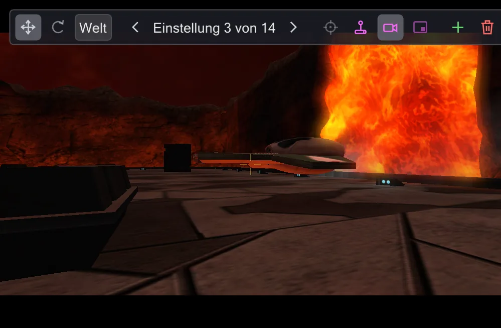
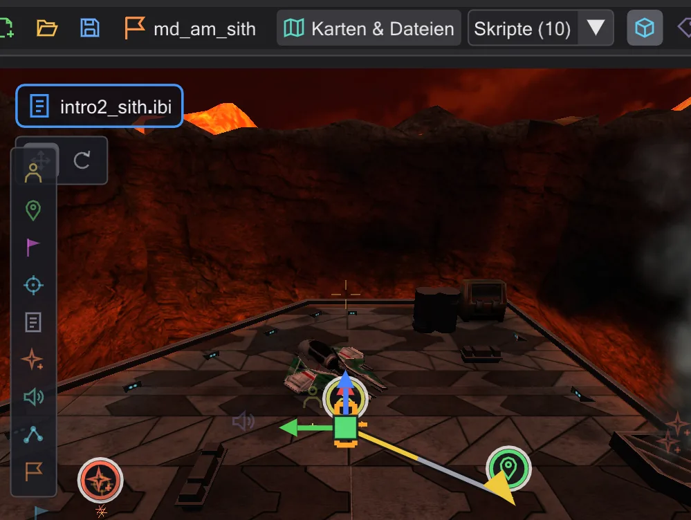
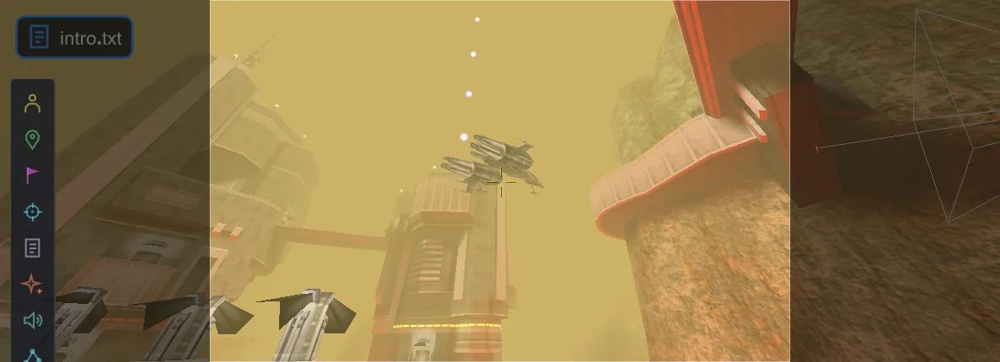
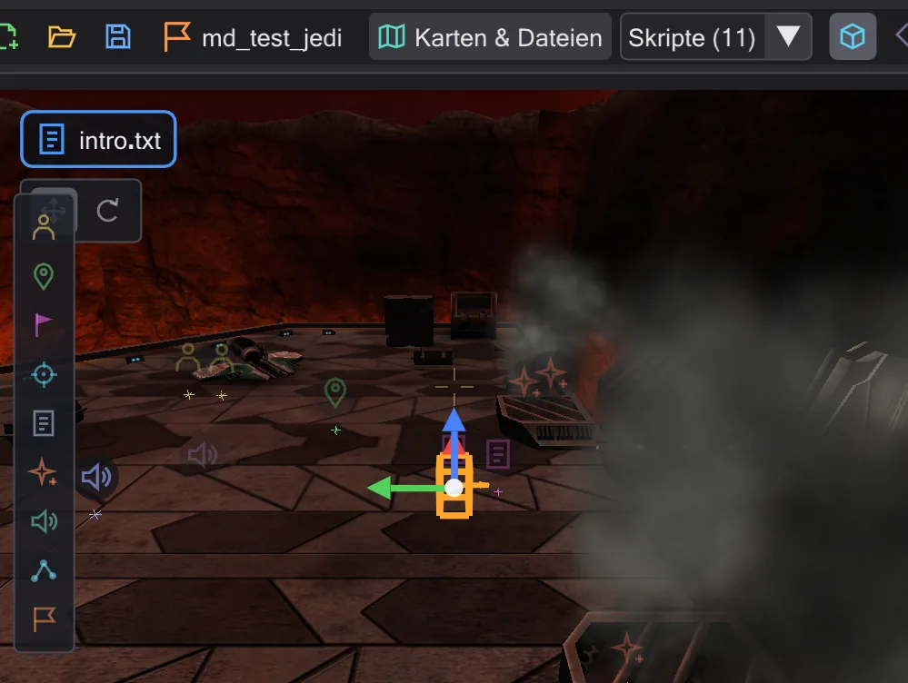

Willkommen
BehavEd-Remake schreibt die Skripte, die in Jedi Academy und Movie Duels Zwischensequenzen und Missionen steuern - und zeigt sie auf der Karte, während du schreibst.

Das Spiel steuert seine Szenen mit ICARUS-Skripten: Listen von Befehlen wie "geh zu dieser Stelle", "spiel diesen Ton", "stell die Kamera dorthin". Ravens Original-BehavEd baute diese Listen aus Knöpfen. BehavEd-Remake tut dasselbe, Datei für Datei verträglich, und bringt mit, was das Original nie hatte: die Karte in 3D, die Figuren auf ihren Wegen, die Kamera in ihren Einstellungen und eine Zeitleiste, die alles abspielt - bevor du das Spiel überhaupt startest.
Wo anfangen#
- Neu hier? Lies Erste Schritte und Das Fenster - zehn Minuten, und jede weitere Seite ergibt Sinn.
- Gleich etwas bauen? Nimm eines der Tutorials unten.
- Du suchst etwas Bestimmtes? Tipp es oben links ins Suchfeld - es durchsucht alle Seiten und springt an die Stelle.
Tutorials#

Eine erste Zwischensequenz
Zwei Kameraeinstellungen, eine weiche Fahrt dazwischen, durch die Kamera angesehen und fürs Spiel übersetzt.

Eine Figur läuft
Eine Figur und ein Laufziel setzen, das Skript sie hinschicken lassen, dann den Weg auf der Karte ändern - gehen oder rennen, ein Punkt dazwischen.

Ein Schiff fliegt eine ROFF-Bahn
Ein freier Flug mit Kurven für das Schiff über der Arena - als ROFF-Datei gebaut, mit dem Gizmo gedreht, fürs Spiel gespeichert.

Eine eigene Mission
Von einer leeren Karte zu einer Mission, die das Spiel lädt: anlegen, ein Intro dazu, prüfen und in ein .pk3 packen.
Was das Programm kann#
| Bereich | Kurz |
|---|---|
| Skripte schreiben | Skripte aus der Befehlsliste bauen, jeden Wert in einem Dialog ändern, kopieren, verschieben, rückgängig - wie im Original-BehavEd. |
| Script Flow: Classic, Graph, Spuren | Ein Skript als Baum sehen, als Graph, wer wen startet, oder als Spuren über die Zeit. |
| Die Karte | Die Karte in 3D mit Licht, Effekten und Modellen; hindurchfliegen, Entities wählen und verschieben. |
| Kamera | Kameraeinstellungen als Schlüssel auf der Karte: mit dem Gizmo verschieben und drehen, selbst fliegen, in der Vorschau ansehen. |
| Zeitleiste | Die Szene abspielen, jeden Befehl in der Zeit sehen, Befehle ziehen, um ihren Zeitpunkt zu ändern. |
| Figuren und Wege | Wege laufender Figuren und fliegender Schiffe: Griffe für Anfang und Ende, neue Punkte, gehen oder rennen, Blickrichtung. |
| Mover animieren und ROFF-Dateien | Schiffe, Türen und Plattformen animieren - als move-Befehle oder als ROFF-Datei, hier gebaut und bearbeitet. |
| Missionen | Eine ganze Mission mit allen Skripten öffnen, eine eigene bauen und sie in ein .pk3 packen, das das Spiel lädt. |